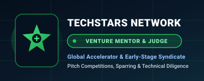
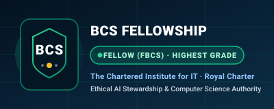
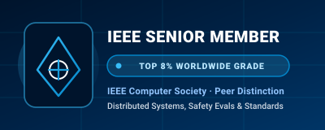
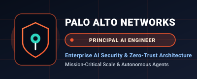

Board & Strategic Advisory
Bridging frontier AI innovation, enterprise cybersecurity resilience, and boardroom fiduciary rigor. Harsh Verma partners with startup founders, technology councils, and corporate boards to translate autonomous technologies into defensible enterprise value.

Distributed systems, AI & enterprise cybersecurity scale
Technical due diligence, architectural defense & moats
UC Berkeley SkyDeck, Techstars, IEEE & Devfolio
Cohort founder mentorship, advisory councils & committees
The Boardroom Governance & Defensibility Flywheel
Defensible Architecture
- Proprietary streaming data pipelines
- Non-wrapper custom evaluation benchmarks
- Elimination of fragile API dependencies
Zero-Trust Agent Security
- Continuous behavioral authorization
- Ephemeral MCP tool sandboxing
- Protection against prompt injection
AI Governance & Safety
- EU AI Act & NIST AI RMF compliance
- Continuous regression evaluation harnesses
- SEC & audit committee disclosure readiness
Unit Economics & Scale
- Multi-cloud tiered inference routing
- 40%+ reduction in token burn rate
- Institutional venture syndicate readiness
Frontier Technical Moat Architecture
Proprietary streaming data pipelines, custom regression eval datasets, vendor lock-in mitigation, and non-wrapper software defensibility.
Areas of Strategic Expertise
Actionable Guidance for Executive Teams, Technology Councils, and Board Committees
Measurable business relevance, enterprise risk containment, and defensible competitive advantage.
AI Strategy & Transformation
Enterprise AI adoption roadmaps, technology investment decisions, token unit economics, and phased integration cascades.
- AI Investment Capital Allocation
- Token & Compute Unit Economics
- Multi-Cloud Inference Routing
Cybersecurity & Enterprise Risk
Securing autonomous multi-agent environments against prompt injections, privilege escalation, and unvetted MCP tool risks.
- Continuous Behavioral Authorization
- Ephemeral Agent Sandboxing
- Attack Surface Perimeterization
AI Governance & Accountability
Institutional governance frameworks, algorithmic transparency, automated regression evaluations, and EU AI Act alignment.
- Autonomous Escalation Guardrails
- Automated Red-Teaming Harness
- EU AI Act & SEC Readiness
Venture & Technical Diligence
Evaluating proprietary data flywheels, software architecture, defensibility, switching costs, and security maturity for investors.
- Data Moat & IP Differentiation Audits
- Scalability & Technical Debt Review
- Engineering Team Execution Velocity
Startup Growth & Tech Leadership
Mentoring technical founders on organizational scaling, hiring engineering leaders, and structuring high-velocity engineering cultures.
- Architecture Sprint Advisory
- Technical Founder Mentorship
- Executive Engineering Recruitment
Agentic AI & Emerging Tech
Multi-agent deliberation networks, stateful coordination loops, memory architectures, tool-calling safety, and distributed pipelines.
- Multi-Agent Orchestration Patterns
- Long-Context Memory Stores
- Human-in-the-Loop Safeguards
Human-in-the-Loop Escalation & SEC Risk Reporting
Automated Regression Red-Teaming & Drift Telemetry
Behavioral Authorization & Ephemeral Tool Sandboxes
Streaming Data Pipelines & Tiered Model Routing
Creating Impact Beyond Technology
Documented Interventions That Protect Capital, Unlock Defensibility & Accelerate Scale
Escaping the LLM Wrapper Trap
Venture risked commoditization and margin collapse due to reliance on basic foundation model prompt wraps.
Re-architected core IP around real-time streaming data ingestion, custom evaluation benchmarks, and specialized agent routing.
65% reduction in third-party vendor dependency and successfully closed institutional Series A round.
Securing Autonomous Agent Actions
Autonomous multi-agent system was executing privileged tool calls with broad, unisolated database write privileges.
Introduced Zero-Trust behavioral authorization and ephemeral execution sandboxes for external MCP tools.
Cleared enterprise SOC2 Type II audit without high-severity findings, unlocking Fortune 500 financial contracts.
Inference Unit Economics
Rapid product growth caused cloud inference token burn to erode gross margins from 72% down to 34% within two quarters.
Structured tiered model routing (small-model task routing + frontier escalation) and semantic embedding caching.
Reduced annual token spend by 48%, improved p95 response latency by 3x, and restored margins above 70%.
“Technology creates opportunity. Governance turns that opportunity into sustainable value.”
Blending entrepreneurial velocity with institutional foresight to ensure technology investments generate durable competitive moats and boardroom defensibility.
Strategic Foresight
Anticipating how generative architectures and autonomous agents reshape market structures years before consensus.
Responsible Innovation
Balancing product speed with accountability, strict data isolation, safety telemetry, and corporate reputation.
Enterprise Resilience
Designing fault-tolerant systems capable of mitigating adversarial attacks, data leaks, and non-deterministic failures.
Long-Term Value
Prioritizing sovereign, defensible technology assets, unit-economic sustainability, and executive accountability.
Three Structured Advisory Models for Every Growth Phase
Select an engagement format below to inspect core deliverables, operating rhythm, compensation structures, and strategic outcomes.
Startup Board
Direct technical sounding board for high-growth venture founders building frontier autonomous AI and security infrastructure.
Tech Advisory
External strategic technology council guiding executive teams on enterprise AI adoption, multi-cloud inference economics, and sovereign roadmaps.
Governance Committee
Fiduciary boardroom oversight on mission-critical AI deployments, regulatory compliance (EU AI Act & NIST AI RMF), and automated risk evaluation.
30–60–90 Day Board Integration Roadmap & Cadence
Diagnostic & Moat Triage
In-depth technical debt audit, data moat defensibility, and security triage.
Governance Baseline
Deploy automated evaluation harnesses, risk thresholds, and EU AI Act telemetry.
High-Conviction Cadence
Quarterly boardroom technology steering, executive vetting, and cloud contract triage.
Fiduciary Scale & Diligence
Annual risk audit, investor syndicate diligence readiness, and sovereign scale.
Deep-Dive Architecture & Moat Diagnostic
Rapid triage of technical debt, foundation model wrapper vulnerabilities, and data moat defensibility to calibrate executive priorities.
- Technical debt & scalability bottleneck audit
- Data moat defensibility & proprietary IP evaluation
- Third-party API vulnerability & vendor lock-in mitigation plan
- Immediate 90-day technical priority roadmap
Perspectives on Technology, Governance & the Future of AI
Incisive Dispatches Shaping the Discourse Across Enterprise Boardrooms & Tech Councils
Death of Static API Keys in the Agent Era
Why static credentials collapse when autonomous multi-agent networks perform high-velocity operations, and how behavioral tokens replace legacy IAM.
Zero-Trust Defense for the Lethal Trifecta
Protecting enterprise models against the lethal combination of prompt injection, untrusted data flows, and unmonitored external tool execution.
Token Economics in the Boardroom
An empirical framework for board members on evaluating true marginal costs, vendor lock-in, and the necessity of proprietary data pipelines.
Venture Advisory Ecosystem & Professional Distinction
Connecting Tier-1 Accelerators, Venture Syndicates & Global Computer Science Fellowships
Active ecosystem leadership advising high-velocity venture portfolios, de-risking technical due diligence, and stewarding rigorous computing standards across global institutions.
UC Berkeley SkyDeck
Advising high-growth startup cohorts on deterministic autonomous architectures, reducing inference unit economics, and navigating venture capital milestones.

Accelerator InspectTechstars Global Network
Architectural sounding board and technical diligence for early-stage founders building AI, distributed systems, and cybersecurity applications.
Forbes Tech Council
Invitation-only executive council for world-class technology executives. Contributing research and dispatches on autonomous multi-agent systems and enterprise security.

Royal Fellowship InspectBCS Fellow (FBCS)
Awarded highest professional membership grade by the Chartered Institute for IT, recognizing senior executive leadership, ethical computing stewardship, and authoritative impact.

Top 8% Worldwide InspectIEEE Senior Member
Conferred to less than 8% of IEEE members worldwide based on significant performance, peer scholarship reviews, and technical innovation in autonomous systems and security.

Enterprise AI InspectPalo Alto Networks
Architecting mission-critical, enterprise-grade AI security products, zero-trust perimeter defense, and distributed agentic evaluation pipelines protecting global enterprises.
Building the Next Generation of Intelligent Organizations
Open to Meaningful Board & Strategic Advisory Engagements
“I welcome opportunities to collaborate with forward-thinking founders, investors, executive teams, and organizations seeking strategic expertise in artificial intelligence, cybersecurity, technology governance, and enterprise innovation.”
Startup Advisory Boards
Hands-on technical advisory for founders building AI and security ventures. Quarterly board reviews, architectural sounding board, and syndicate access.
- Proprietary data moat & model defensibility reviews
- Monthly founder architecture sparring sessions
- Technical due diligence prep for Series A–C syndicates
Technology Advisory Councils
External advisory councils guiding CTOs, CIOs, and executive teams on AI roadmap prioritization, multi-cloud strategy, and risk de-risking.
- Enterprise AI adoption roadmap & vendor triage
- Multi-cloud tiered inference cost optimization
- Quarterly C-suite strategic technology briefings
AI Governance Committees
Fiduciary advisory on responsible AI deployments, compliance with global regulations (EU AI Act, NIST), and algorithmic audit trails.
- NIST AI RMF & EU AI Act readiness frameworks
- Continuous automated evaluation harnesses
- Boardroom risk disclosure & audit committee reporting
Cybersecurity Advisory Roles
Strategic cyber risk oversight, zero-trust transformation counsel, third-party vendor risk assessment, and incident response governance.
- Autonomous multi-agent zero-trust security architecture
- Third-party MCP tool sandboxing & privilege controls
- Fiduciary cyber risk posture reviews for audit committees
VC / PE Technical Due Diligence
Technical due diligence for pre-investment deal evaluation, portfolio architectural health checks, and technology moat validation.
- Wrapper vs. proprietary IP differentiation analysis
- Architecture scalability, tech debt & cloud cost burn audit
- Engineering team execution velocity & talent evaluation
Independent Director Opportunities
Independent director service bringing technical engineering acumen, cybersecurity fluency, and AI governance depth to corporate boards.
- Fiduciary board oversight on high-stakes technology bets
- Nomination & technology governance committee leadership
- Executive mentorship for CEO, CTO, and CISO
Initiate a Confidential Board or Advisory Discussion
Reach out directly via the confidential mandate portal to explore an advisory seat, council membership, or diligence engagement.
Executive Board Biography
Download a concise 2-page overview of Harsh Verma's technology leadership, advisory experience, governance expertise, and professional credentials prepared for nomination committees.